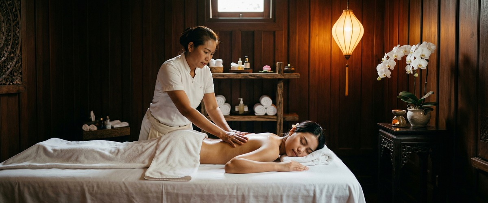
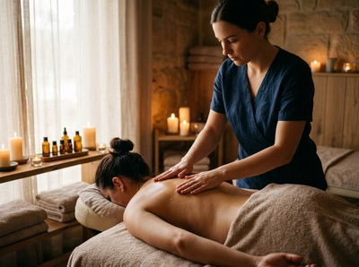
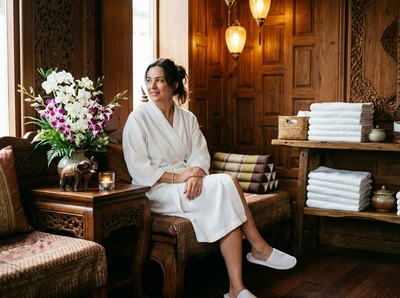

If stress has settled into your muscles, your sleep is disrupted, or your mind simply won't slow down, Thai aromatherapy massage in Glasgow offers a treatment that works on both levels at once.

At Serendipity Massage Therapy & Wellness on Hope Street, this is one of the most deeply restorative sessions we offer.
Thai aromatherapy massage brings together traditional Thai oil technique and therapeutic-grade essential oils in a single session. Your therapist uses flowing strokes, gentle kneading, and targeted pressure along the body's sen energy lines. The essential oils are absorbed through the skin and inhaled throughout the session.

The oils calm the nervous system and ease tension at a deeper level than touch alone.
Unlike a standard Thai oil massage, the essential oil blend is chosen for your specific needs. Lavender for stress and poor sleep. Eucalyptus for muscle inflammation. Peppermint for focus and energy. Ylang-ylang for anxiety.
The result is a treatment that tackles what you came in with, not just a general sense of relaxation.
This treatment suits people carrying tension that has built up over weeks, not days. Think Glasgow professionals who sit at a desk for long hours, people in high-stress periods, or anyone struggling with poor sleep or low mood.
It also works well for those who need more than physical relief from a session. And if you've never had a massage before, this is a gentle place to start.
Before your session begins, your therapist will take a few minutes to understand how you're feeling. This guides the choice of essential oil blend. You'll undress to your comfort level and be properly draped throughout the session, which runs for 60 or 90 minutes.

The treatment combines flowing strokes with the targeted pressure work of traditional Thai technique, using warmed oil throughout. Most clients feel a clear shift in tension within the first 20 minutes.
Afterwards, you can expect to feel calm, loose, and grounded. We recommend taking things gently for the rest of the day and drinking plenty of water. You can book your Thai aromatherapy massage online to get started.
At Serendipity Massage Therapy & Wellness, every therapist is trained to the same standard. The techniques were developed by head therapist Jariya Malone. That means you're not relying on the luck of who's available.
Whether it's your first visit or your twentieth, the quality of your session is built on the same approach. Book a session and experience the difference a trained team makes.
Yes, this treatment uses oil and is performed on a massage table, so you will need to undress. You will be properly draped with towels throughout, and only the area being worked on is uncovered at any time.
Your comfort and privacy are the priority. Your therapist will walk you through what to expect before you begin.
Traditional Thai massage is done fully clothed on a floor mat. It uses pressure and assisted stretching, with no oils. Thai aromatherapy massage is oil-based and uses therapeutic-grade essential oils throughout.
This adds a sensory and emotional layer to the physical work. The oil blend is chosen to match your needs — whether that's stress, muscle tension, poor sleep, or low mood. If you'd prefer a clothed session, our other treatments may be a better fit.
Most clients feel deeply calm, physically relaxed, and mentally clearer after a session. The mix of massage and essential oils works on both the body and the nervous system. The effect tends to last longer than a standard massage alone.
Some people feel a little sleepy, which is completely normal. We suggest keeping the rest of your day quiet and drinking plenty of water.
For ongoing stress management or sleep support, every two to four weeks is a good rhythm to aim for. If you're going through a demanding period, coming in every two weeks can make a real difference.
A single session will leave you feeling better. But the results that build over time come from regular treatment.
Please let us know about any skin sensitivities, allergies, or conditions before your session. Your therapist will factor this in when choosing the oil blend and can avoid anything that may cause a reaction.
We always carry out a brief consultation before we begin, so there is plenty of chance to raise any concerns.
Swedish massage uses long, flowing strokes at soft pressure. It focuses mainly on physical relaxation and circulation. Thai aromatherapy massage includes those strokes but also brings in traditional Thai pressure work and targeted essential oils.
It's a more layered treatment with both physical and emotional benefits. If you're weighing up options, our therapists are happy to help you choose at the time of booking.